What this shows
A moderator signs into the PWA via Firebase, the new /api/moderation/v1
API authenticates the Bearer ID token and authorizes against live
Account.permissions, and every suggestion type can be reviewed and
accepted from the PWA — match videos, team media, social media, robot/CAD designs,
event media, webcasts, offseason events, and API write keys. Accepting creates the
real domain entities through the shared SuggestionReviewer service
(the same transactional accept logic the web review controllers use).
| Suggestion type | API slug | Bulk accept | Result |
|---|---|---|---|
| Match Videos | match | Select All Accepts → submit | accepted, queue emptied |
| Team Media | media | Select All Accepts → submit | accepted, queue emptied |
| Social Media | social-media | Select All Accepts → submit | accepted, queue emptied |
| Robot / CAD | robot | Select All Accepts → submit | accepted, queue emptied |
| Event Media | event_media | Select All Accepts → submit | accepted, queue emptied |
| Webcasts | event | Select All Accepts → submit | accepted, queue emptied |
| Offseason Events | offseason-event | individual (unique short code) | accepted |
| API Key Requests | api_auth_access | Select All Accepts → submit | accepted, queue emptied |
1 · Seed test data (admin)
The new /admin/suggestions/seed page creates a pending
suggestion of every type (plus minimal target entities on an empty datastore) and can
grant review permissions to a moderator by email.
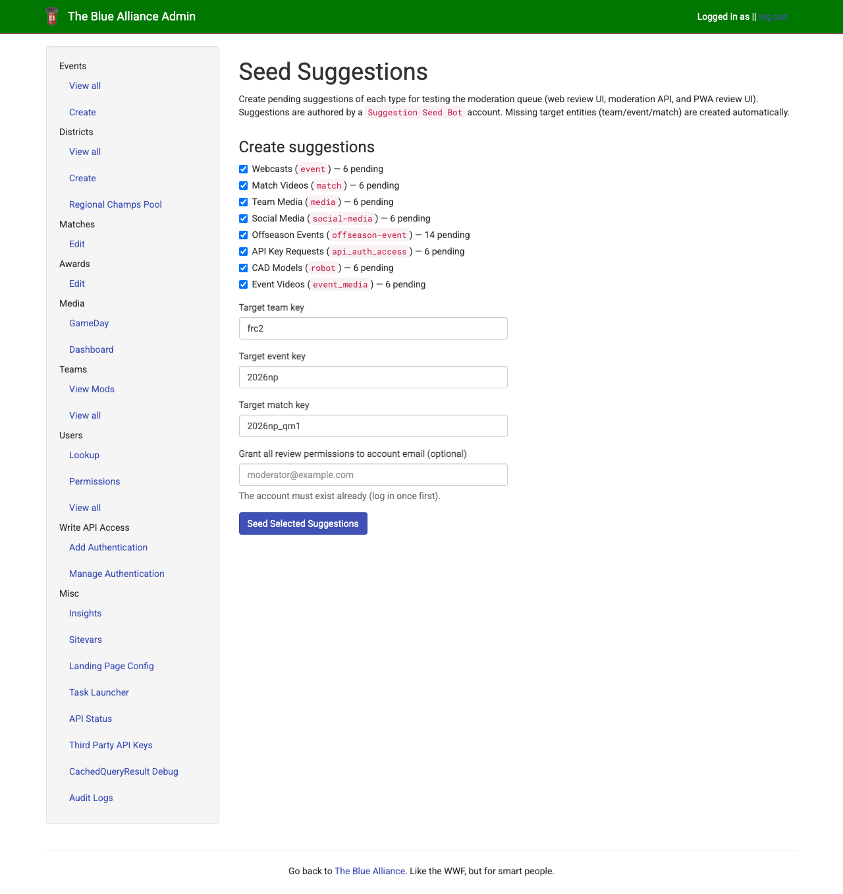
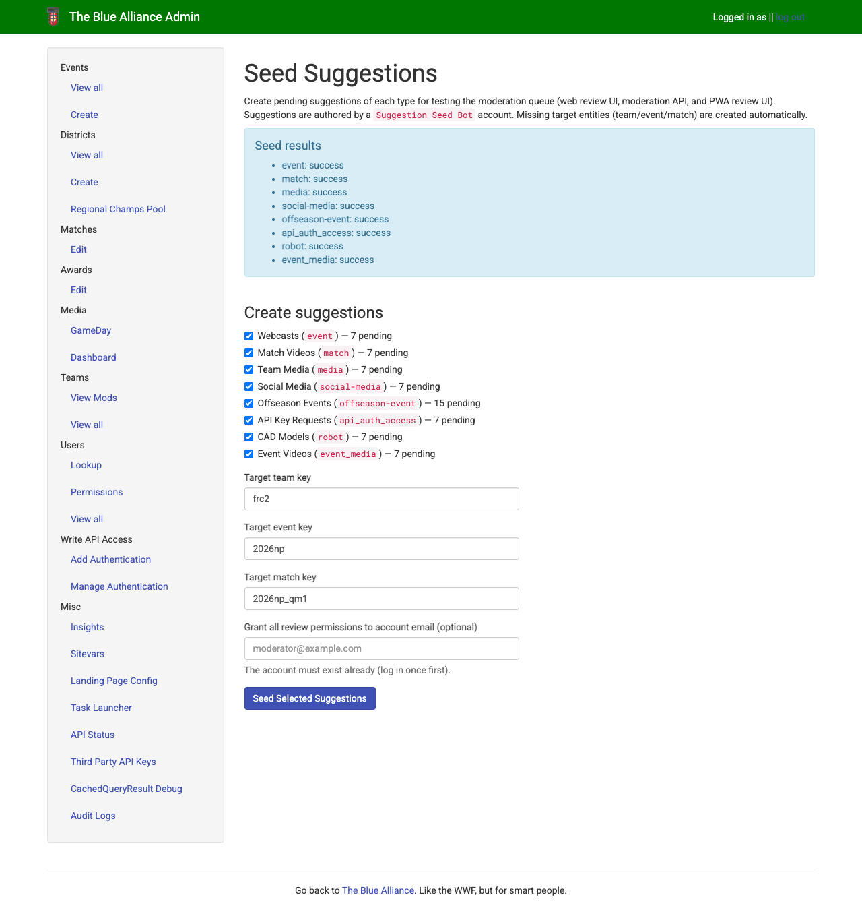
2 · Moderator sign-in (Firebase)
The PWA review routes are login-gated. The moderator signs in through
the Firebase auth emulator; the PWA then calls the moderation API with
Authorization: Bearer <firebase_id_token>.
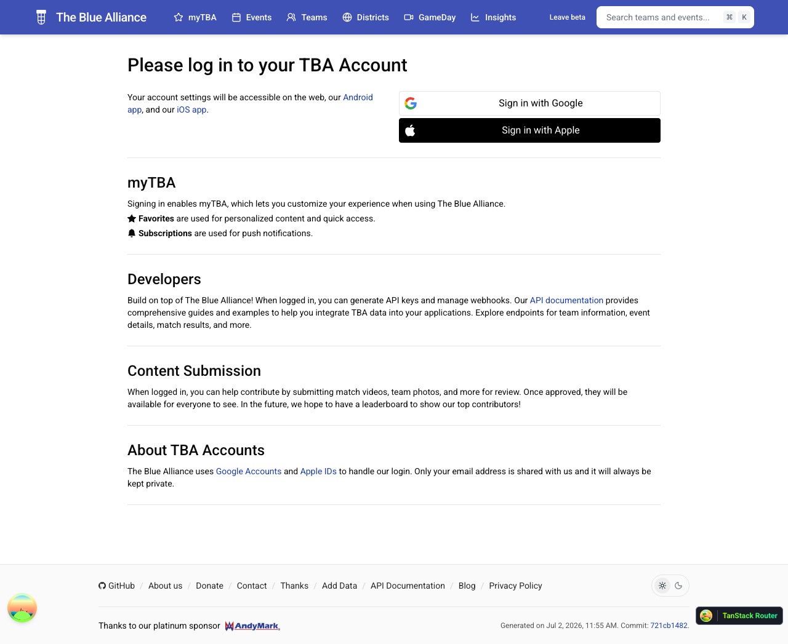
3 · Review dashboard
With REVIEW_* permissions granted, GET /queue
returns pending counts per type, filtered to the caller's permissions.
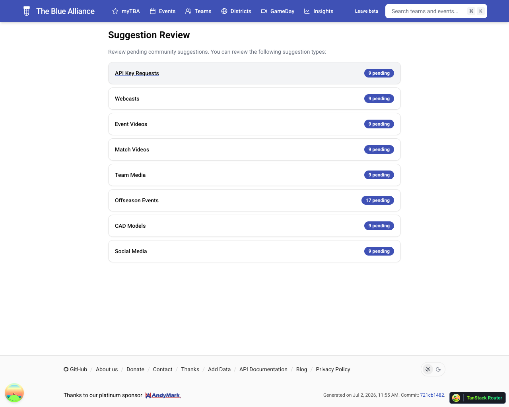
4 · Reviewing each type
Each queue page mirrors the web review pattern: rich per-suggestion metadata (embeds/previews, target links, suggester identity, type-specific override inputs), individual Accept/Reject, and bulk select-then-submit.
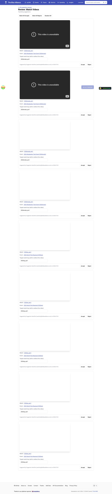
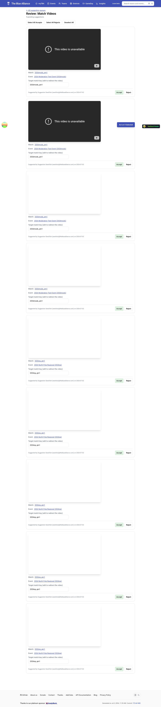
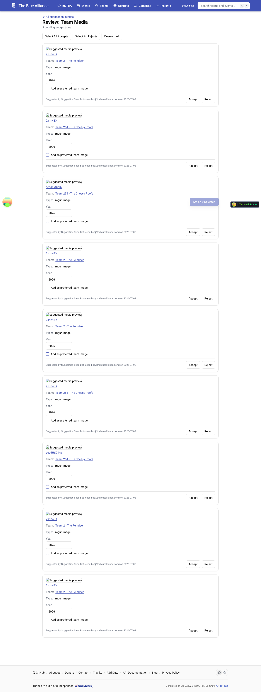
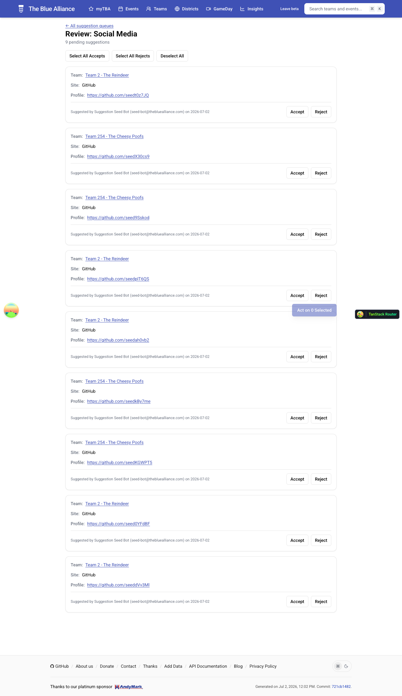
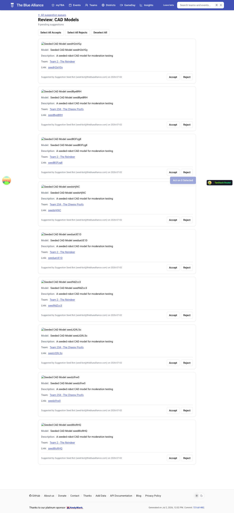
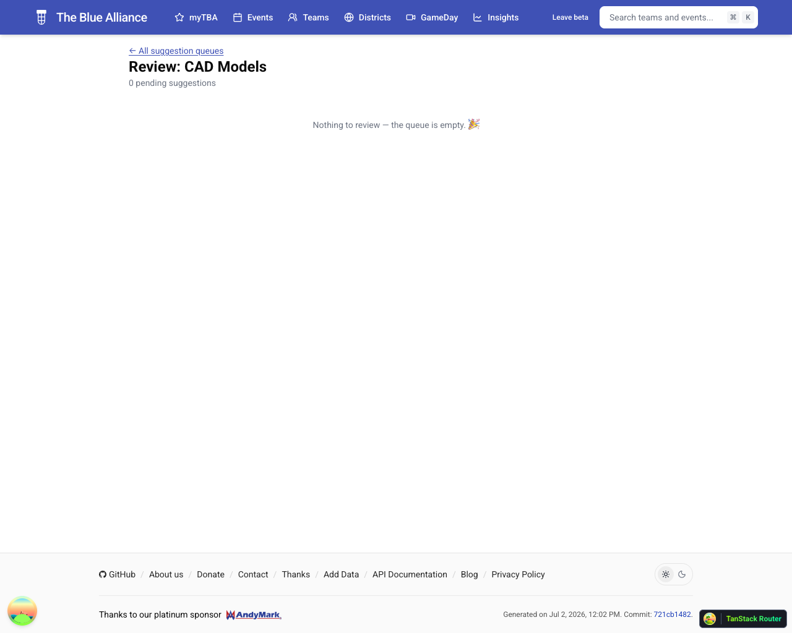
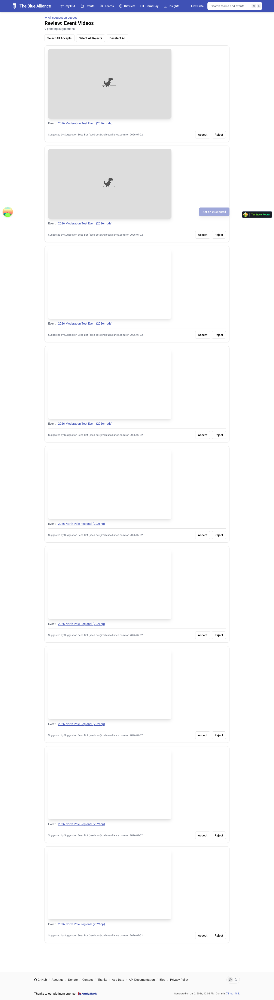
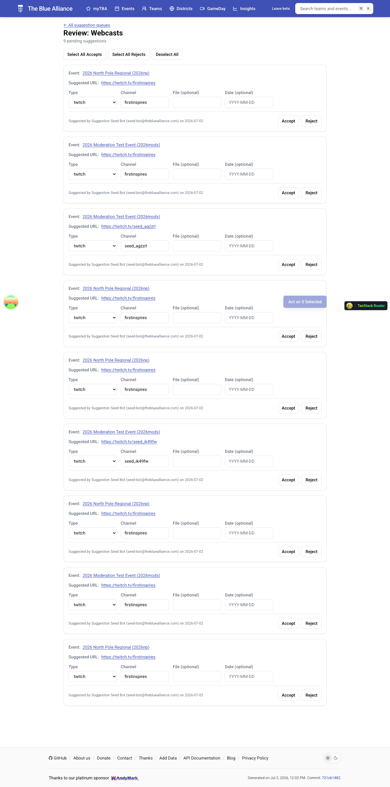
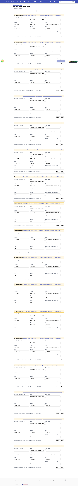
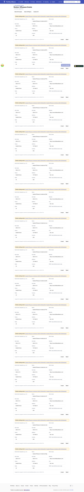
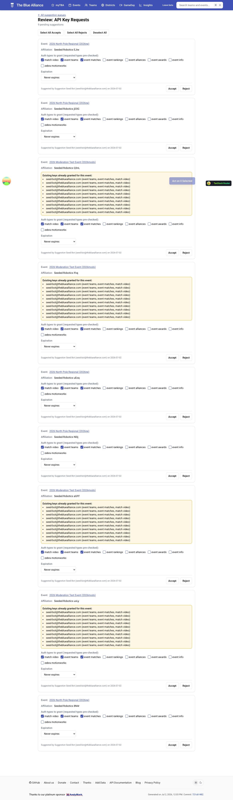
5 · Final state
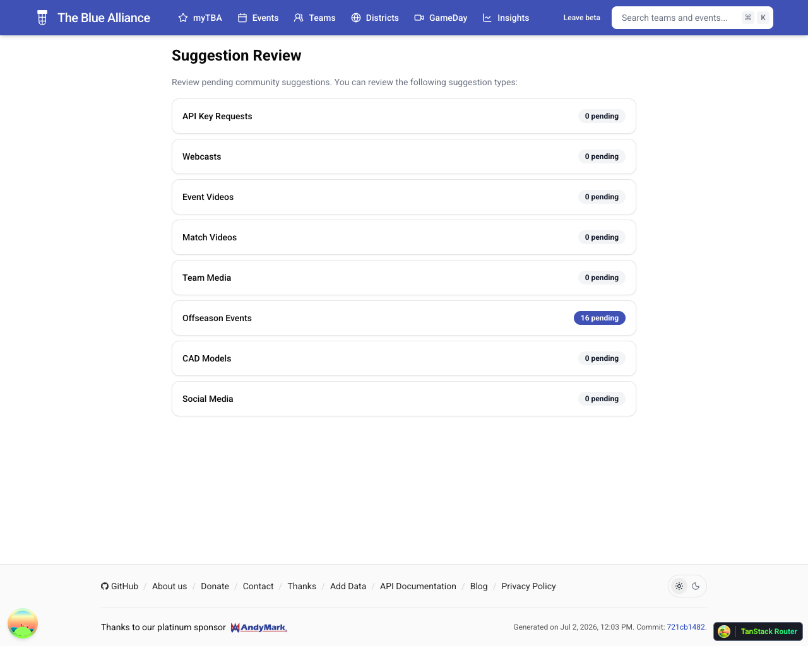
Backend verification
Independent of the UI: 36 handler tests in
src/backend/api/handlers/tests/moderation_test.py cover auth (401/403),
queue counts, listings, accept side-effects (entity creation, state flip, audit log),
reject, and double-review no-ops. Datastore inspection after this run confirms
accepted suggestions flipped to REVIEW_ACCEPTED, created their target
entities (e.g. the match gained its YouTube video), and wrote
AuditLogEntry rows. Full backend suite: 3819 passed ·
make lint / make typecheck clean · PWA typecheck/eslint
clean, 266 unit tests passing.